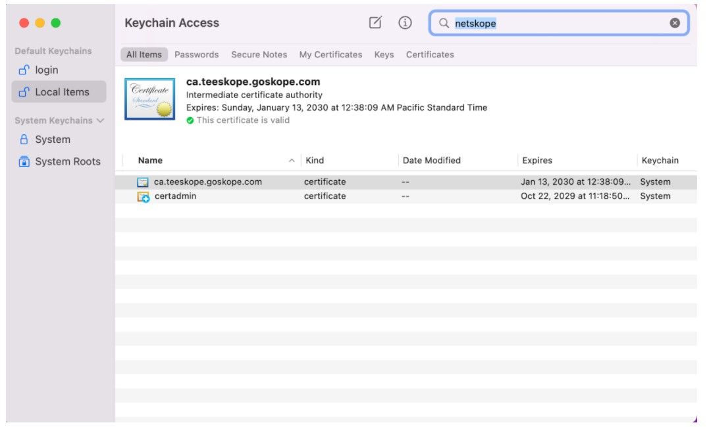
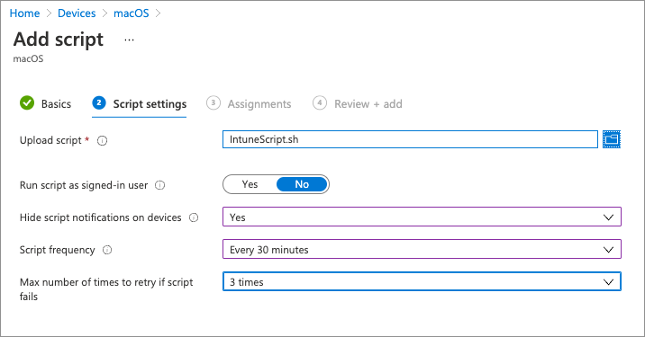
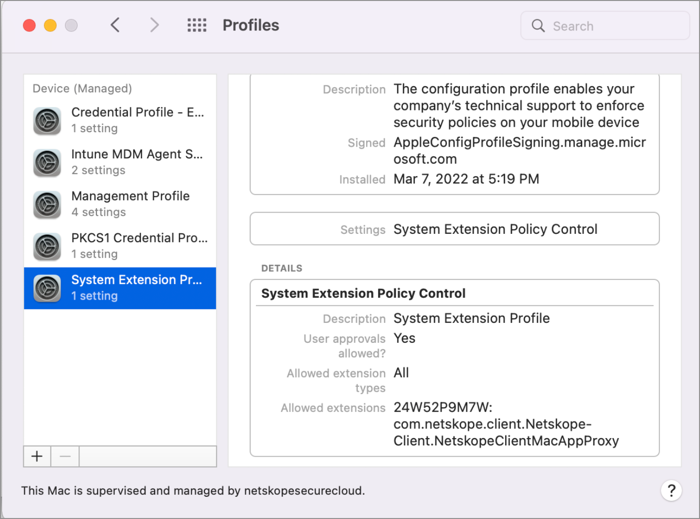
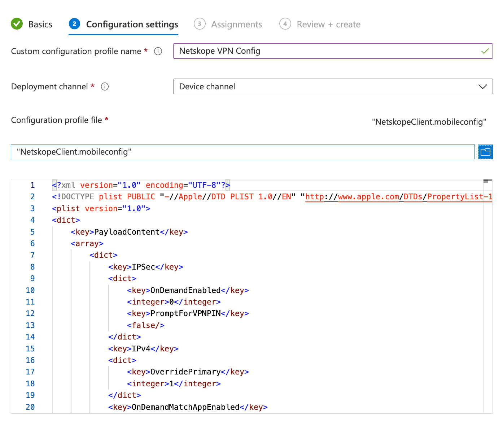
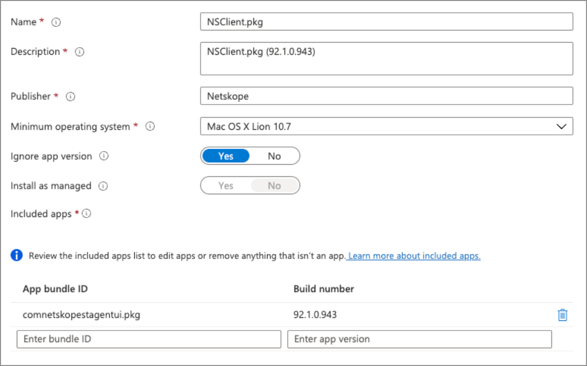

Deploy Netskope Client with Microsoft Endpoint Manager
This article provides instructions to deploy Netskope Client on Windows and Apple devices using the Microsoft Endpoint Manager (previously known as Intune).
Note
Requires Admin level access to Microsoft Endpoint Manager.
Supported Devices
Windows devices either joined to Active Directory or Azure AD.
Apple devices enrolled in Microsoft's Endpoint Manager.
Note
To learn more about supported OS and platform, see the Supported OS and Platforms section.
Deploying on Windows Devices
The following steps are for deploying Netskope Client on WIndows devices.
Prerequisites
On-board or add users into Netskope using Directory Importer or SCIM integration.
Deployment Procedure
Ensure the device is enrolled in Microsoft Endpoint Manager
Log in to the Azure Portal
Access the Management Page
Under Manage, select Client Apps

Under Manage, select Apps
Select Add
For App Type, select “Line-of-business app”
Upload the NSClient.msi to App Package File and select OK
Under App Information
Provide a description
Publisher Name
Set Ignore App Version to Yes if you intend to allow the Netskope client to auto-update
Select the appropriate category
Select No under Display this as a featured app in the Company Portal
Information and Privacy URL are optional values
Under Command-Line Arguments:
token=<organization id> host=addon-<tenant-name>.goskope.com mode=peruserconfig(Use peruserconfig only for multi-user environments)autoupdate=on(only applicable if you want the client to auto-update)/qn
Select OK
Select the appropriate Scope Tag
Select Add.
Wait for the app to upload and finalize
Select the Netskope Client from the app list
Select Assignments > Add Group
For Assignment Type, select Required
Select the appropriate groups that should be included or excluded
Select Save
You can monitor the installation process from the Endpoint Manager. Go to Client Apps > Install Status > Search for “Netskope” > Device Install Status

Deploying on Apple Devices (Big Sur)
The following steps are for deploying Netskope Client on Apple devices running macOS 11.x (Big Sur) or later.
Prerequisites
Devices running macOS 11.x (Big Sur) or later.
Enroll devices in Microsoft's Endpoint Manager
Convert Netskope Client package to an .intunemac file. For detailed information and procedure, visit Microsoft Docs portal.
Follow these steps after converting the .pkg to .intunemac file. For more details, see Microsoft Doc Portal
Download Netskope Root and Intermediate certificates and convert them to the .cer extension. To learn more, see Certificates
Configure and verify SAML forward proxy authentication and ensure that users are properly imported into your Netskope tenant. To learn more about user provisioning and SAML Forward Proxy authentication, see Provisioning and Authentication
Deployment Procedure
Sign in to Microsoft Endpoint Manager Admin Center.
Go to Devices > macOS devices. Ensure that the devices to which you will Netskope Client are listed.

Create two configuration profiles to deploy the Netskope certificates.
Go to macOS policies > Configuration Profiles > Create Profile and select Profile Type as Templates and Template name as Trusted Certificate.

Click Create. The page will refresh with settings. Enter a name for the root certificate profile and click Next.
Click the folder icon to select the Netskope root certificate (.cer file) and click Next to continue.
Assign the appropriate device group and click Next.
Review the configuration and click Create.

Repeat the steps used to upload Netskope root certificate and create another configuration profile to upload Netskope intermediate certificate.

Validate Certificate Chain
You can validate the complete certificate chain in your Mac keychain.
Download the Netskope Intune IDP configuration script (Intune Scipt) from Netskope Support portal .
Extract the contents of Intune.sh.zip file.
Open the Intune script in a text editor and search for the commented line
Add Command Line parameters below.Modify the line below the commented line to reflect the appropriate tenant values:
set -- 0 0 1 idp <insert tenant domain name> <insert tenant name> 0For example, if your tenant name is
example.goskope.com, modify the line to:set -- 0 0 1 idp goskope.com example 0Ensure that the following line uses the same values as the preceding line:
argstring="0 0 1 idp goskope.com example 0"
Save the script.
Go to Devices > macOS > Shell Scripts and click Add.

Enter a Name and click Next.
Select the script (.sh file) from your local storage in your computer. Make the following changes:
Run script as signed in users - NO
Hide script notifications on devices - Yes
Script frequency - Every 30 minutes
Max number of times to retry if script fails - 3 times.
Assign the script to groups, users, and/or devices. Click Next to continue.

Click Add to the add the script and push to all devices.
Confirm IDP Configuration Deployment: To confirm if the IDP configuration is pushed successfully, verify the contents of
/Library/Application Support/Netskope/STAgent/nsidpconfig.json. The contents of the file should look similar to:john-MacBook-Pro:STAGENT johnd$ cat nsidpconfig.json {"serviceProvider": {"domain": "goskope.com". "tenant": "example"}}
Go to macOS policies > Configuration Profiles > Create Profile and select Profile Type as Templates.
Under Template Names select Extensions and click Create.
Provide a name for the Netskope System Extension profile and click Next.
Expand System Extensions and configure Allow Systems Extensions as follows:
Bundle Identifier:
com.netskope.client.Netskope-Client.NetskopeClientMacAppProxyTeam Identifier:
24W52P9M7W
Select Next to continue.
Assign appropriate users or device group and select Next.
Review your configuration and click Create.
Use the Profiles options in the end-user device to validate if the System Extension was deployed successfully.

Go to macOS policies > Configuration Profiles
Download custom configuration profiles from Netskope Support Portal.
Select Create Profile and under the Profile Types option, select Templates > Custom. Click Create.
Specify a profile name.
Keep the Deployment Channel option to Device Channel.
Upload the custom configuration profile downloaded from Netskope Support Portal. Click Next to continue.
Select and assign appropriate users or groups. Click Next to continue.
Review configuration and click Create.
Use the Profiles option in the end-user device to validate if the installation was successful.
Create a line-of-business applications to be deployed on the Apple devices (Big Sur).
Before proceeding ensure the following:
Convert the Client installation pkg to an .intunemac file.
Resolve an issue with Intune and Netskope Client app including multiple components. See Microsoft Doc Portal for more information.
Go to Apps > macOS and click Add. Select Line-of-business app from the App type drop-down menu. Click Select.

Select the app package (.intunemac) file by browsing to it and click OK.
Enter a publisher name and click Next.

Assign the application to devices or users. Click Next to continue.

Click Create to complete creating the application.
Now login to your IdP to start the enrollment process.
Uninstalling Clients
To set up un-installion script for Netskope client in Windows devices follow the procedure as described in this section:
Note
This procedure is applicable only for devices that are AD joined. Also, during subsequent installation, un-assign this app to avoid un-installation of the newly installed Clients
Login to your Intune admin console and select Device Configuration.
In the Device Configuration page, click Scripts option in the left hand side.
To start adding uninstallation script, click the Add button and select Windows 10.

In the Add Powershell Script page, enter a Name for the script configuration and click Next to continue.

In the script settings page, select the powershell script from your computer. Enter the following command in the powershell script.
$product_identifier= Get-WmiObject -Class Win32_Product | where Name -eq "Netskope Client" | select -expandproperty IdentifyingNumber msiexec /uninstall $product_identifier /qn /l*v <path-to>\nscuninstall.log
Set the following options for the script
Run this script using the logged on credentials - YES
Enforce script signature check - NO
Run script in 64 bit PowerShell Host - YES

Click Next to continue.
In the Assignment step, assign the user groups for this script. Netskope Client in all devices of the assigned user group will be uninstalled.
In the last step, review your selections and click Add to complete the procedure.